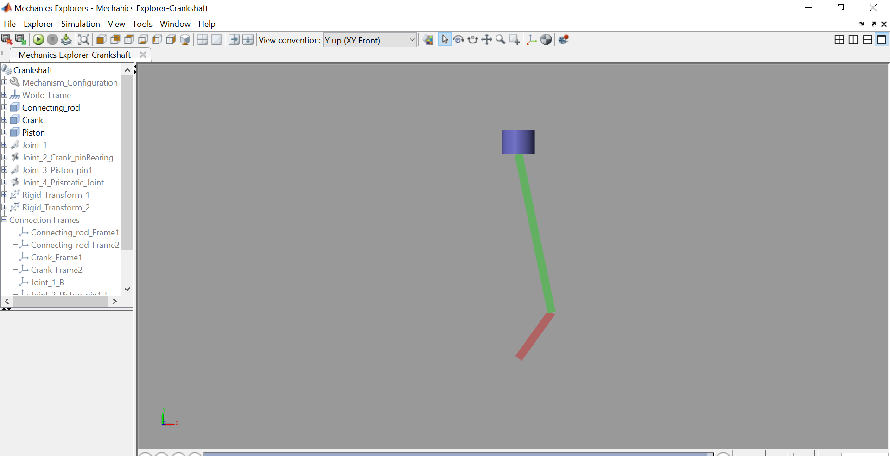

- A crankshaft is a rotating that converts reciprocating motion of the pistons into rotational motion .A crankshaft connects with the piston through a connecting rod. The main objective of this connecting rod is to receive reciprocating motion by the piston and delivers it to the crankshaft.
- They are used commonly in internal combustion engines
- Here, only a single cylinder piston is considered: 1 degree of freedom (DOF) system
- Ground, gravity and internal reference system
- Three bodies
- Four joints
Requirements for a crankshaft modeling
The simulation is created on matlab with simscape,This tool is very powerful,we can import Cat model or we create it like in this exemple shown

Figure 1: Simulink model of 2DOF robor arm
in this Figure(Figure1),there are three bodie with 4 joints; two of them are revolution,one is prismatic and the fourd is bearing joint
The model is simulated on Mechanics Explorers(matlab 2018)
To download The file Click
Back to the home pagepage